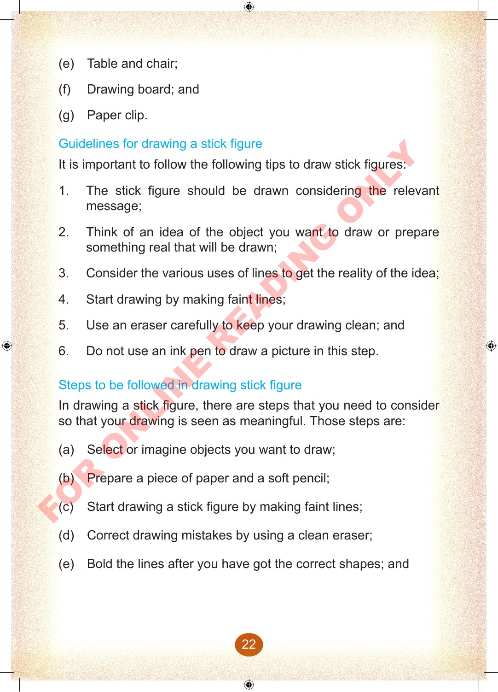

(e)
Table and chair;
(f)
Drawing board; and
(g)
Paper clip.
Guidelines for drawing a stick figure
It is important to follow the following tips to draw stick figures:
1.
The stick figure should be drawn considering the relevant message;
2.
Think of an idea of the object you want to draw or prepare something real that will be drawn;
3.
Consider the various uses of lines to get the reality of the idea;
4.
Start drawing by making faint lines;
5.
Use an eraser carefully to keep your drawing clean; and
6.
Do not use an ink pen to draw a picture in this step.
Steps to be followed in drawing stick figure
In drawing a stick figure, there are steps that you need to consider so that your drawing is seen as meaningful.
Those steps are:
(a)
Select or imagine objects you want to draw;
(b)
Prepare a piece of paper and a soft pencil;
(c)
Start drawing a stick figure by making faint lines;
(d)
Correct drawing mistakes by using a clean eraser;
(e)
Bold the lines after you have got the correct shapes; and